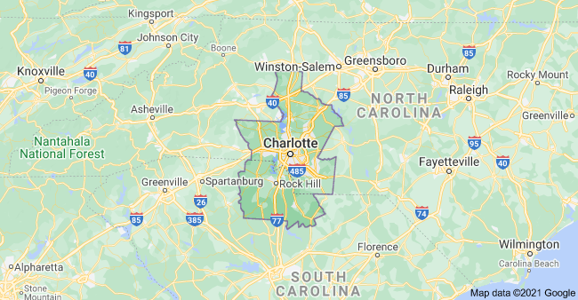

Hi! I'm Stephanie Moore
I am currently a student of software development located in the Greater Charlotte Metropolitan Area (North/South Carolina)
As a former forester:
- I am familiar with managing entire ecosystems
- I know the importance of seeing the forest and not just the trees
- I know that while each individual contribution is important, you need a team to manage the ecosystem
I am excited and ready to use my experiences this new way. Please take a look at my webpage and feel free to contact me!
About Stephanie
After graduating college with a B.S. in forest resource management, I went on to become a professional forester. When the covid-19 pandemic hit and I was laid off, I started exploring other career options and found a new interest in programming.
I love the idea of being able to create my own websites to bring some ideas I previously had to life. I also think that the programming field has tons of opportunities for projects including many that could pair my former expertise with my current growing knowledge.
I hope that my time as a student at Thinkful will prepare me to start my journey as a software developer. If you would like to be apart of my post-Thinkful journey, please reach out, I am excited to hear what projects you have for me.
Contact Stephanie
Please reach out to me or follow my work, I would love to hear from you.
